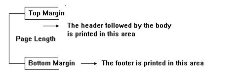

To define the footer lines to be printed at the bottom of each page.
Footer
code
End
Where:
code
Sequence of valid language commands.
The commands between the Footer clause and the End clause are executed upon reaching the end of a page.
If there are printing lines between the Footer and End, they will be printed within the bottom margin (MB parameter). If Footer lines do not fit within the bottom margin area, the printing continues on the following page.

Objects: Procedures
Languages: .NET, Ruby, Java, RPG, Visual Basic, Visual FoxPro, Cobol
Interfaces: Web, Win
Header Command
Printing Commands Summary
|